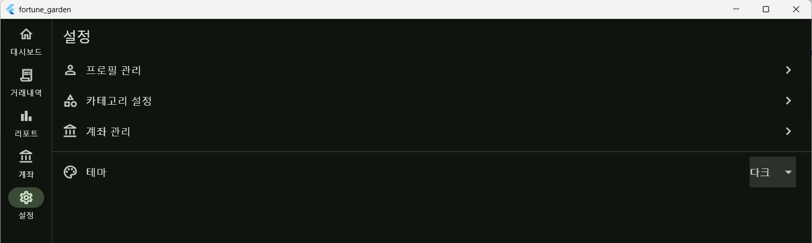
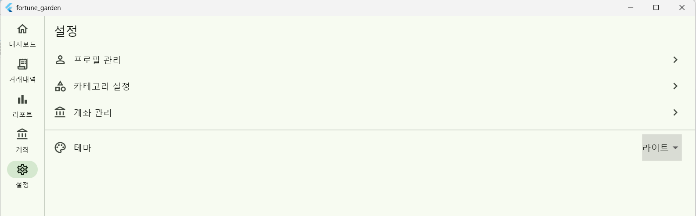
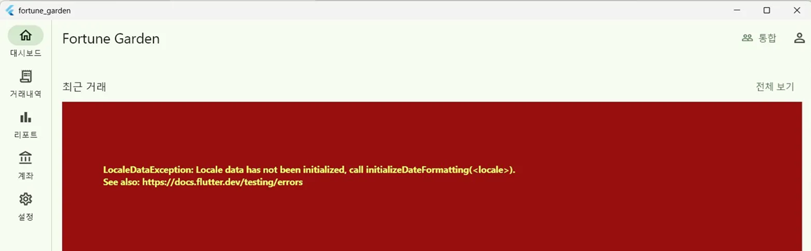

Overview
작업 개요
대상 플랫폼
Windows / Android (Flutter)
아키텍처
Clean Architecture (Presentation / Application / Data)
상태 관리
Riverpod (StreamProvider)
데이터베이스
Drift ORM (app_settings 테이블)
Part A — Dynamic Theme
테마 동적 적용 구현


A1. 배경 및 문제
기존 app.dart는 ThemeData가 하드코딩되어 있었으며,
darkTheme 및 themeMode 파라미터가 누락되어
설정 화면에서 테마를 변경해도 앱 재시작 전까지 UI에 반영되지 않는
문제가 있었습니다.
A2. 데이터 흐름
SettingsScreen.onChanged('dark')
↓
settingsRepository.set('theme', 'dark') (DB Upsert)
↓
AppDatabase.watchSetting('theme') emit (Drift Stream)
↓
themeProvider 재계산 → ThemeMode.dark
↓
app.dart MaterialApp 재빌드 → 즉시 테마 전환
A3. 주요 구현 코드
1. Database & Repository (Stream 지원)
// app_database.dart: Drift의 watch 기능을 활용한 실시간 구독 Stream<String?> watchSetting(String key, {String? defaultValue}) { return (select(appSettings)..where((t) => t.key.equals(key))) .watchSingleOrNull() .map((row) => row?.value ?? defaultValue); }
2. Theme Provider
final themeProvider = StreamProvider<ThemeMode>((ref) { final repo = ref.watch(settingsRepositoryProvider); return repo.watchValue('theme', defaultValue: 'system').map(_toThemeMode); });
3. UI (MaterialApp) 연동
final themeMode = ref.watch(themeProvider).valueOrNull ?? ThemeMode.system; return MaterialApp.router( theme: ThemeData(brightness: Brightness.light, colorSchemeSeed: Colors.green), darkTheme: ThemeData(brightness: Brightness.dark, colorSchemeSeed: Colors.green), themeMode: themeMode, // 실시간 상태 구독 ... );
A4. 지원 테마 값
| DB Value | ThemeMode | 설명 |
|---|---|---|
'system' |
ThemeMode.system | OS 설정 동기화 (기본값) |
'light' |
ThemeMode.light | 항상 라이트 모드 |
'dark' |
ThemeMode.dark | 항상 다크 모드 |
Part B — Bug Fixes
한국어 로케일 초기화 오류 수정

B1. 증상 및 원인
증상
LocaleDataException 발생
대시보드 화면의
_TxnTile에서
DateFormat 사용 시 앱 크래시 발생.
원인
초기화 누락
intl 패키지 사용 전
initializeDateFormatting('ko') 호출이
app_initializer.dart에서 누락됨.
B2. 수정 내용
import 'package:intl/date_symbol_data_local.dart'; Future<void> initializeApp(WidgetRef ref) async { await initializeDateFormatting('ko'); // 최우선 호출 추가 ... }
Part C — Changed Files
변경 파일 목록
| 파일 경로 | 유형 | 변경 내용 요약 |
|---|---|---|
lib/data/database/app_database.dart |
수정 | watchSetting() 메서드 추가 |
lib/domain/repositories/i_settings_repository.dart
|
수정 | watchValue() 시그니처 추가 |
lib/presentation/providers/theme_provider.dart
|
신규 | StreamProvider<ThemeMode> 생성 |
lib/app.dart |
수정 | themeProvider 구독 및 darkTheme 설정 |
lib/app_initializer.dart |
수정 | intl 로케일 초기화 코드 추가 |
Part D — Backlog
미완료 작업 (우선순위)
- 카테고리 규칙 UI (SCR-009): AddRuleForm 미구현 상태
- PIN 잠금 기능: 저장 로직은 완료되었으나 잠금 UI 화면 부재
- 대시보드 차트: DonutChart 및 BarChart 컴포넌트 개발 필요